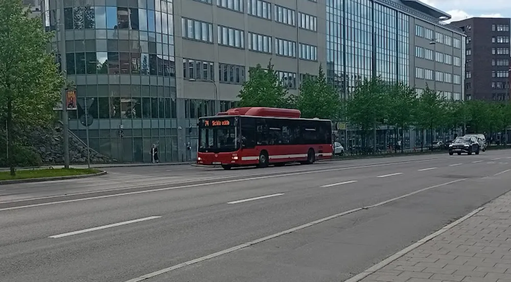

Inrikes

Nytt SL-förslag ska ge färre förseningar
Sedan Nobina tog över busstrafiken i Huddinge har lokaltrafiken präglats av problem. Det mest uppenbara: förseningarna. Men tack vare ett nytt förslag från ledningen kan problemet vara löst.
Har du åkt buss någon gång den senaste månaden har säkert någon av dörrarna vägrat stängas, trots att chauffören försökt stänga den flera gånger. Nobina och SL har i en rapport kommit fram till att det har kostat dem över 15 miljoner kronor i förseningar, samt att dörrarna inte går att fixas eftersom ingen vet hur dörrmekanismen fungerar. På grund av det här har SL lagt fram ett förslag, en "akut lösning" som de beskriver det, att Nobina tar bort alla dörrar på bussarna tills någon listat ut hur de fungerar. Det här ska se till att alla bussar kommer i tid samt att busschaufförer ska slippa jobba obetalt, eftersom att lämna förarsätet (i det här fallet för att fysiskt gå och dra igen dörren) innebär att de tekniskt sett inte jobbar enligt Nobinas anställningskontrakt. Som en bonus blir inte bussarna så ofantligt varma på somrarna.
Om Nobina gör verklighet av SL:s förslag kan man se bussar rulla utan dörrar redan i April.